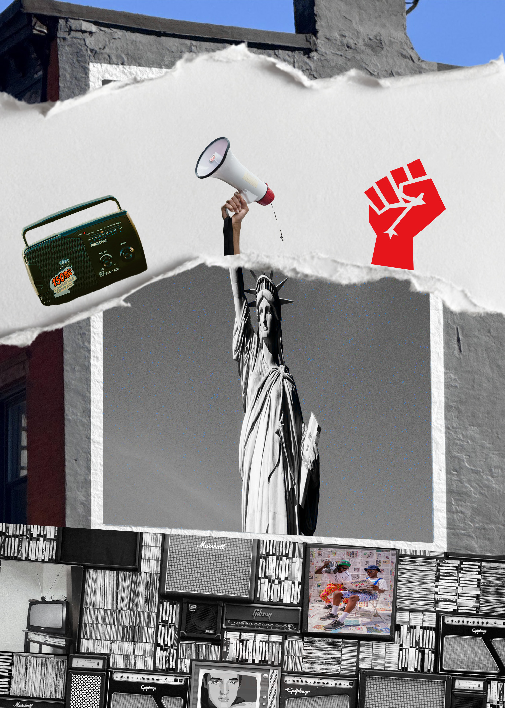
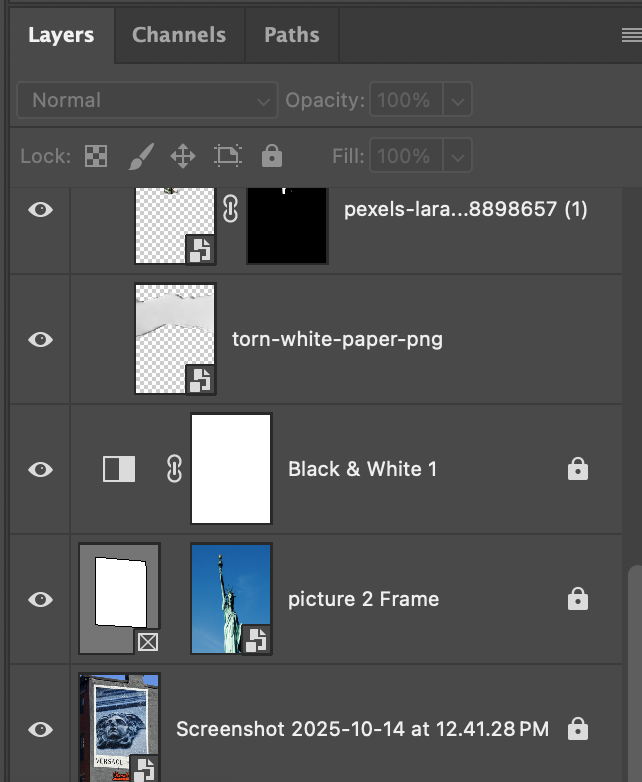
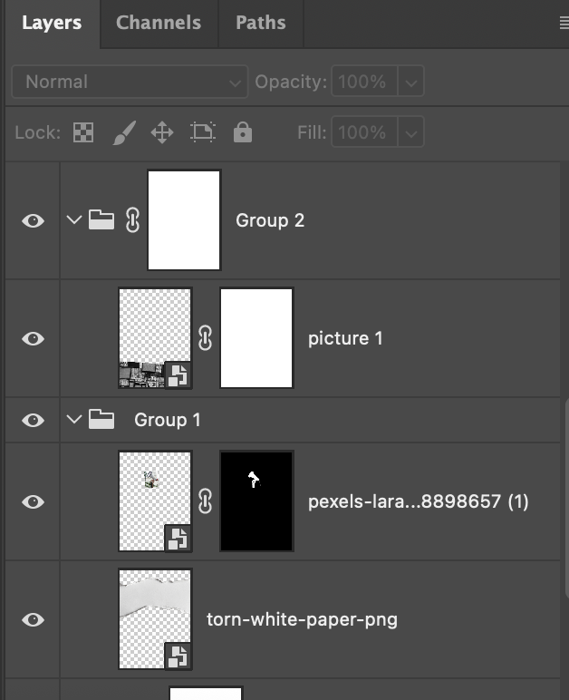
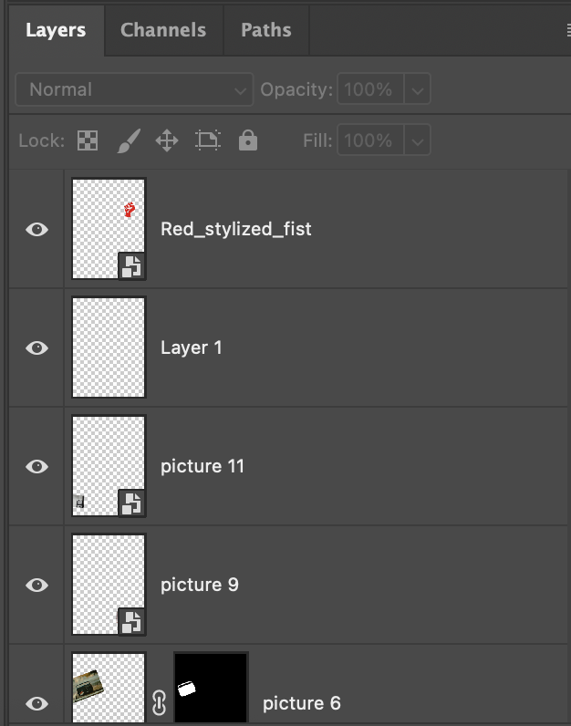

The first picture is about the increased protests and portrays them through the history of media innovations. From Newspapers to radio to TV to the Internet. I want to use the Statue of Liberty as a base, with it holding a microphone to symbolize freedom of speech. I use blend modes, such as Luminosity, to change the Statue of Liberty from a blue background to a more grayish background, fitting the color scheme.
   